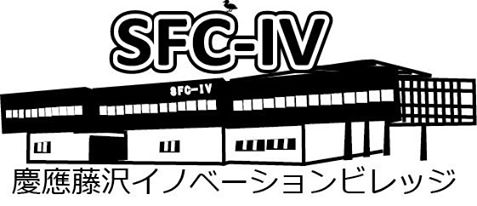

スポンサー
協賛企業
KBC Business LeverageおよびKBC実行委員会のイベントは、下記協賛企業の皆さまに支えられて成り立っています。
 |
||
| アーキタイプ株式会社 | 株式会社アサツー ディ・ケイ | 株式会社三技協 |
 |
 |
|
| 新日本有限責任監査法人 | 日本メガソーラー整備事業株式会社 | 株式会社野心満々 |
 |
||
| 弥生株式会社 | 有限責任監査法人トーマツ | 株式会社LITALICO |
特別協力企業
| 株式会社ぐるなび | 株式会社じげん | ソフトバンク株式会社 |  |
 |
| TECHFUND | ビズシード株式会社 | 株式会社ビットアイル |
 |
 |
|
| ライフネット生命保険株式会社 | LINE株式会社 | Lean Startup Japan |
| 株式会社Wicrep |
後援組織
|  |  |
 |
| 慶應藤沢イノベーションビレッジ(SFC-IV) | MMインキュベーションパートナーズ | 情報産業三田会 |
KBC Business Leverageとは
KBC Business Leverageは、起業を志す塾生の「実現可能性」を短期間で大幅に引き上げるために昨年度から始まったKBC実行委員会独自の起業支援プログラムです。日本を、世界を次のステージへ引き上げるアントレプレナーはいかにして生まれるのでしょうか。また、そうした人々を発掘し、その真価を発揮するためにはどんなことが必要となるのでしょうか。4ヶ月間に渡ってビジネスプランではなく、そのビジネスを実行するチームに焦点を当てた支援を行うLeverageは、KBC実行委員会が7年間のビジネスコンテスト運営を経て出した、その問いに対する1つの答えです。今年度のKBC Business Leverage2.0では「Throw away your map. Embrace serendipity」を行動指標として掲げ、リーンスタートアップの手法を取り入れることで、柔軟且つスピーディーに事業を進展させていきます。

支援内容
KBC Business Leverage2.0では、プログラムへ応募したチームの中から一次審査(書類審査)によって最大14チームが選出されます。その後、一ヶ月のプログラムを経て、再び選考をくぐり抜けた5つのチームがファイナルステージへと進みます。それらのチームに対して資金とコミュニティの両側面から支援が提供されます。これらの支援の全ては無償で提供され、KBC実行委員会は支援に伴う一切のリターンを求めません。
| 資金の支援 | 採択された5チームには10万円の活動支援金を提供するほか、最終報告会にて優秀なチームに対して協賛企業とKBC実行委員会より総額100万円の資金提供を行います。 |
| 機会の支援 | 1st Launch Period, 2nd Launch Periodの２段階構成となっており、プログラム期間中にはプロトタイプ作成のための勉強会やチームの進捗発表・メンタリングの場としてクローズドな報告会を設けています。 |
| つながりの支援 | 各チームに起業支援家が1名づつスーパーバイザーとしてサポートを行うほか、KBC実行委員会が8年間のビジネスコンテストを通して培ったつながりが報告会の場を中心としてチームへ提供されます。 |
最終報告会プログラム
KBC Business Leverage2.0の選考を通過した5つの参加チームは9月27日の決起会「Kick Off Party」以降、KBC実行委員会のメンバーや起業支援家によるスーパーバイザー、様々な企業からお集まりいただいたメンターといった人々の支援を受けながら自身の事業を推進しています。KBC Business Leverage2.0における「報告会」はその事業の進捗をLeverageにご協賛いただいている起業の皆さまや他のスーパーバイザー、メンターへ発表する機会として設けられていました。
しかし、KBC実行委員会ではそうした、本来はクローズドに行われる会にこそこれから起業家となる学生にとって魅力的な情報が詰まっていると考え、その第3回目となる「最終報告会」については大きなホールで一般観覧者を募集して開催することを決定しました。
基調鼎談
KBCサミットでは学生チームの報告プレゼンに加え、２回の貴重鼎談を行います。
1つ目は「生き方〜企業という選択」をテーマで、モデレーターにKBC実行委員会の会長である岡田正大氏、パネリストにライフネット生命保険株式会社の代表取締役会長兼CEOの出口治明様、株式会社ぐるなび代表取締役会長の滝久雄様、株式会社LITALICOの代表取締役社長の長谷川敦弥様の皆様方をお迎えして基調鼎談していただきます。
2つ目は「ITで変えられる未来」をテーマで、モデレーターに慶應義塾大学大学院招聘教授の夏野剛氏、LINE株式会社の代表取締役社長の森川亮様、株式会社じげんの平尾丈様、株式会社ビットアイルの寺田航平様の皆様方をお向かいして基調鼎談していただきます。
基本情報
| 日程 | 2014年12月14日(日) |
| 時間 | 13:00~18:10 (終了後20:30まで懇親会がございます) |
| 場所 |
慶應義塾大学 三田キャンパス 北館ホール ・田町駅（JR山手線／JR京浜東北線）徒歩8分 ・三田駅（都営地下鉄浅草線／都営地下鉄三田線）徒歩7分 ・赤羽橋駅（都営地下鉄大江戸線）徒歩8分 |
| 観覧費 |
無料 (懇親会へ参加される場合には別途学生1000円、社会人5000円を頂戴いたします) |
| お申込み | 12月12日までにこちらのページよりお申込み下さい。 |
| 定員 | 300名 |
タイムテーブル
最終報告会は基調鼎談、報告プレゼンテーション、デモンストレーションを中心として構成されており、観覧者の皆さまにはその全てをホールの客席でご覧いただけます。当日のタイムテーブルは以下のようになっておりますが、当日までに予告なく変更される場合もありますので、ご注意下さい。
また、当日報告を行うチームについてはLeverage参加チームの情報をご覧ください。
| 12:30 | 開場 |
| 13:00 | 開会 |
| 13:00~13:15 | OPムービー, 開会挨拶, 企業紹介, タイムライン紹介 |
| 13:15~14:25 |
パネルディスカッション1 |
| 14:25~14:35 | 休憩 |
| 14:35~15:50 | 報告プレゼンテーション |
| 15:50~16:30 | 休憩/デモンストレーション |
| 16:30~16:35 | 第1次行動期間参加者チームのプレゼンテーション |
| 16:35~17:45 | パネルディスカッション2 |
| 17:45~18:05 | 各授与、講評、観覧者賞 |
| 18:05~18:10 | 閉会の挨拶アナウンス |
| 18:30~20:30 | 懇親会 |
Leverage参加チーム
最終報告会で発表を行うチームは9月からの3ヶ月間に渡り、数知れない困難を乗り越えてながらなんとか事業を推進してきました。
自分たちの思い描くサービスの最高の形を目指してプロトタイプのスクラップ・アンド・ビルドを繰り返したチーム、プログラミングを学びながらサイト構築をしてきたチーム、チームメイトの経験をきっかけに問題意識を抱え、事業に取り組んできたチーム、自らの実体験から芽生えた問題意識を事業化に向けて切磋琢磨しているチーム、「あったらいいな」を自ら作ろうとしているチーム...
そんなチームの全てを、最終報告会ではみなさんにお伝えします。
ぷっとぷったーず☆
ユーザーがアートで飾りたい空きスペースの写真をアップすると、そのスペースの雰囲気に合うアート作品がリコメンドされるというECサイトです。このサービスから、アートを買うという体験、そしてお洒落な空間の創造をより身近なものとしてユーザーに提供します。
täglich

私たちは、日常で無駄にしてしまっている雨水での発電によって、発展途上国の人々の暮らしに灯りを届けることを目的としたチームです。従来の製品は、水路の水から発電をしていましたが、それらの製品には，非常に高価で大型であるという欠点がありました。今回私たちは、雨水の位置エネルギーをうまく活かした簡易な水力発電機を開発しました。この単純な構造の発電機は今までにない低コストでの設置が可能です。私たちの製品が多くの発展途上国で利用される日が来ると確信しています。
Macanvas Tech Team
治安の不安定な地域に滞在する人が抱く、言葉の通じない場所でも安全に滞在したいという悩みを解決するアプリです。SNSや公的機関の発信するテキスト情報を解析するロジックとシステムインフラを用意し、リアルタイムに旅行者に渡航先の治安情報を提供するモバイルアプリを開発し販売します。
チームとりまやろう！

経験がないため適切な判断が出来ない！最適な方法を探す時間がない！アドバイザーから効率よく情報収集するのが難しい！というアントレプレナーの課題を解決するサービスです。個人個人に最適な方法や情報を適切に提供します。
週末Quintet

「インターネットを使って距離の無いマーケットを創る」という理念の下、若者に特化した新しいスタイルのショッピングアプリを提案します。出品者が生放送を行いながらのオークションによってオンタイムの市場を提供することによって、出品者と落札者の距離を縮める事が出来ると考えました。はじめは流行に敏感な女子高生や女子大生をターゲットとしたアプリを、人気の読者モデルやキャス主が不要になった服を売る場所として始めます。それこそが「pupulala」であると考えています。